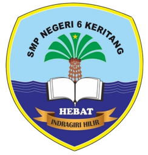

Tanpa sinyal
Halaman ini belum pernah dibuka saat ada sinyal, jadi belum tersimpan di HP.
Halaman yang pernah dibuka (Beranda, kelas, absen, nilai) tetap bisa dilihat tanpa sinyal.

Halaman ini belum pernah dibuka saat ada sinyal, jadi belum tersimpan di HP.
Halaman yang pernah dibuka (Beranda, kelas, absen, nilai) tetap bisa dilihat tanpa sinyal.